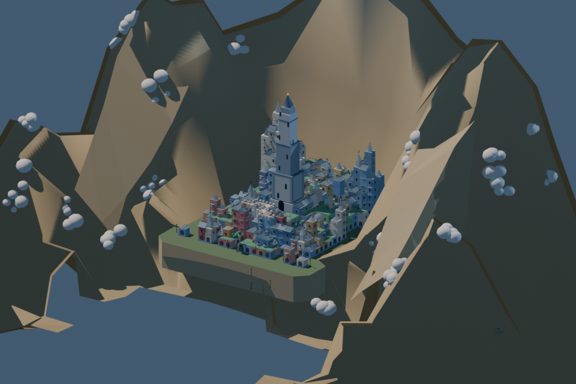
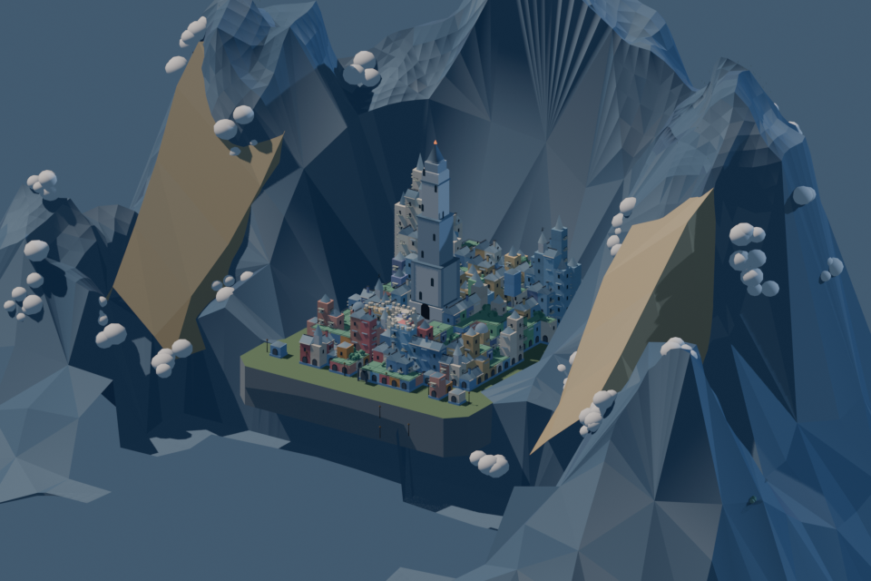
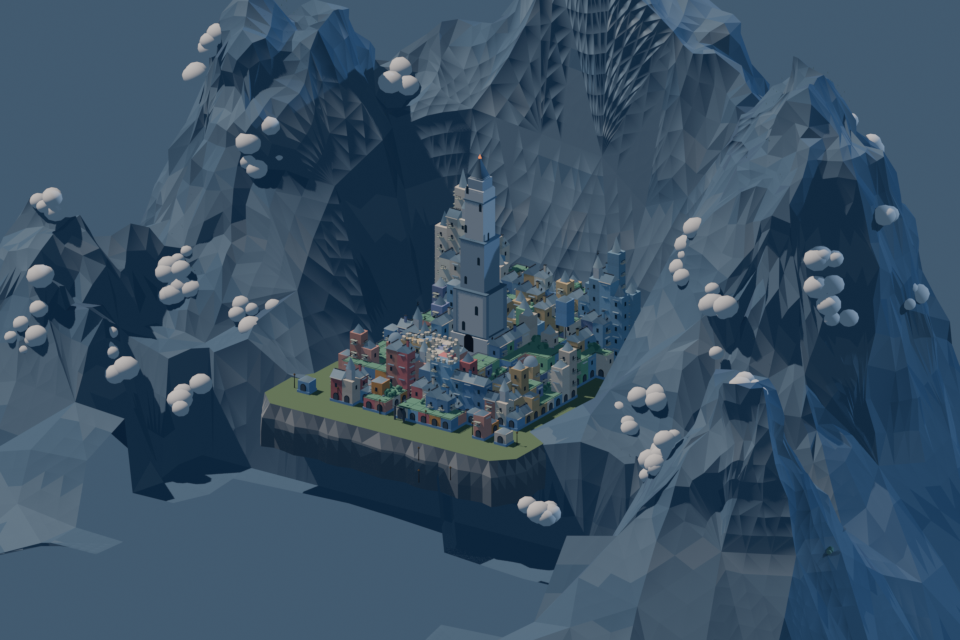
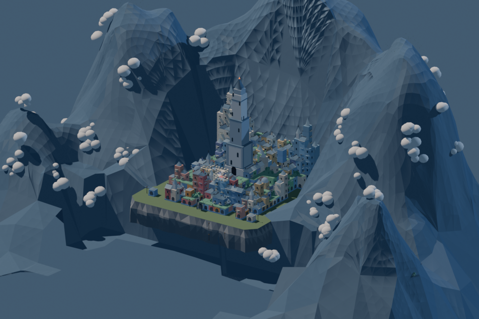

最新布局已采用方案2：新圣城在前景右侧。查看最新布局与截图。以下为此前地形试验归档，不代表当前游戏。
圣城地形：Blender 实际迭代
状态：候选，尚未合入 8931 或 Godot。相机与光照固定。当前城堡是归档原模型，仅供地形对照，不包含最新旋梯与庭院修复。
已认可的方向

目标的核心仍未完成：开阔前景广场、雕塑、台地城市、清晰上山通路与水岸。当前三次地形试验不能算三轮完整场景交付。
基线

山壁大折板、台面方直；城市被山壁包围。
地形试验 1

新增山面细分与蓝灰分面；旧峡谷叠层、扇形长三角明显。保护区原顶点检查通过。
地形试验 2

移除画面中的两片归档峡谷叠层，基础侧面增加支撑形态；新增尖碎分面过强，未采用。
地形试验 3

平滑外围新增山面、减弱色阶跳变；右侧轮廓改善，中央内壁仍有狭长面与折痕。尚不能进入正式游戏。
下一项实际工作：修复内壁拓扑和山城比例，再处理前景台面与雕塑；使用最新运行时 WFC 快照替换对照城堡，随后分别核对 Web 与 Godot 的几何与碰撞。